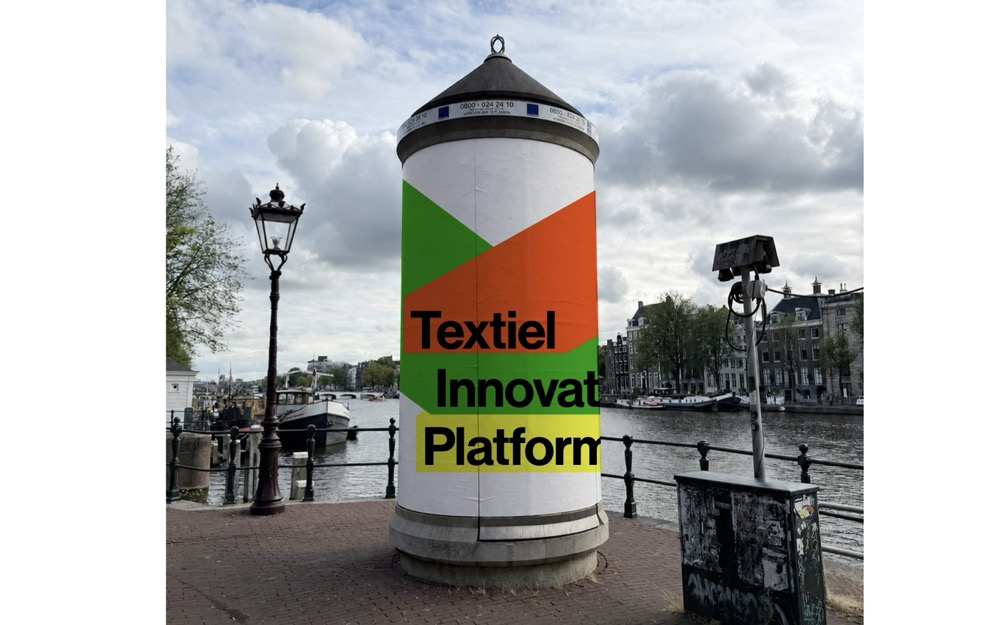
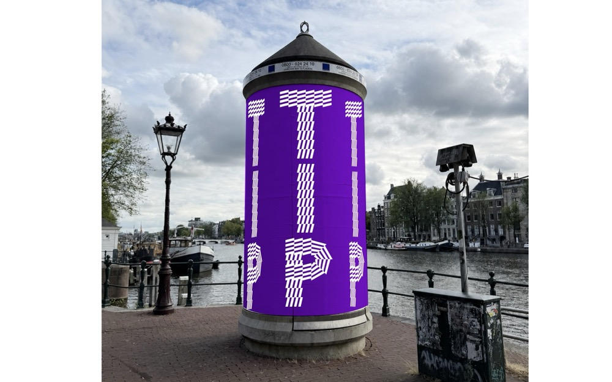
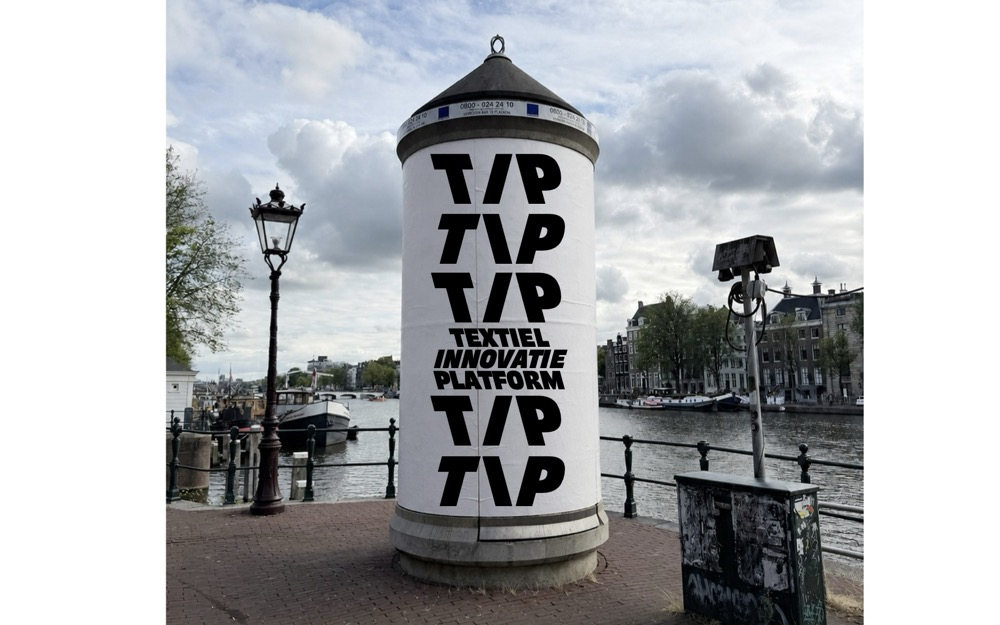
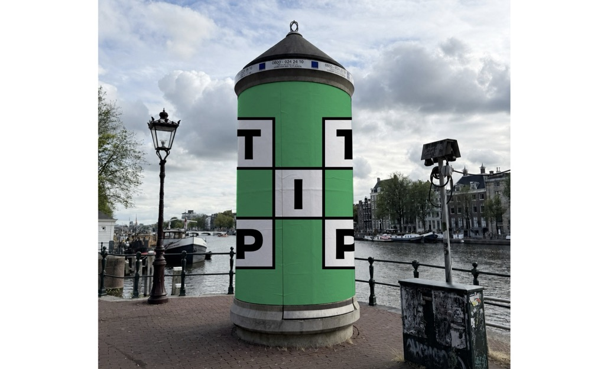

01
Kader
Frame, kader, lijn, stiksel, verbinden
Animatie · de lijn tekentOpenen
02
Platform
Isometrie, dynamische stapeling

PDF p43 · paperbus
Animatie · stapeling zwaait, het P-woord wisseltOpenen Animatie · 3D, blokken draaien om de asOpenen
03
Patroon
Weefstructuur, repetitie

PDF p54 · paperbus
Animatie · TIP wordt gewevenOpenen
04
Kantelpunt
Tipping point · T\P en T/P

PDF p76 · paperbus
Animatie · de I klapt omOpenen
05
Blokken
TIP-blokken, modules, isometrisch

PDF p101 · paperbus